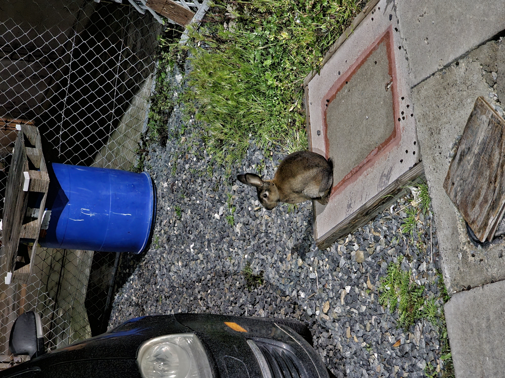
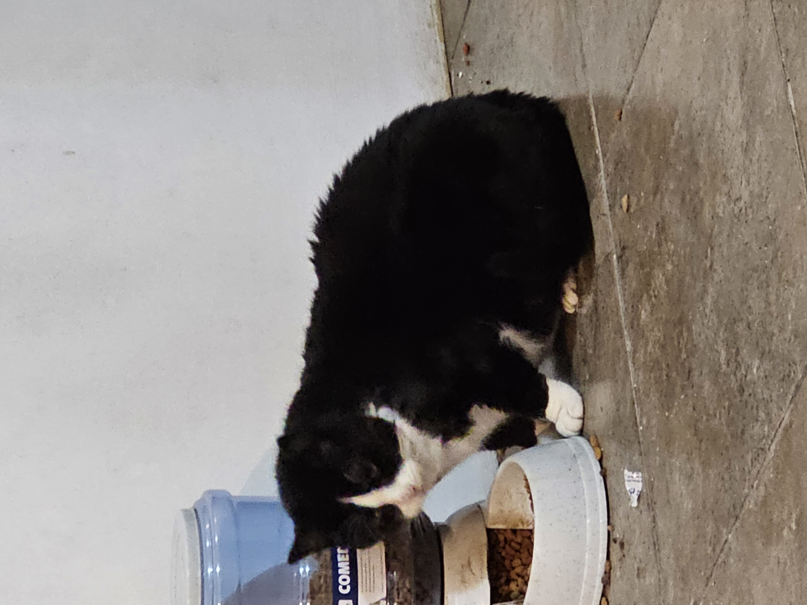
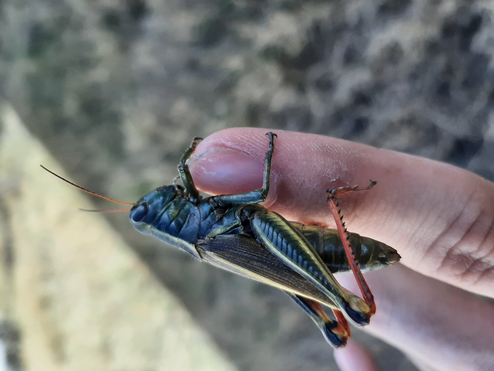

Gavilan de Cooper

Ubicacion
Este Gavilan me lo encontre yendo al trabajo en Bonita Point Plaza Chula vista en el E H street.
Descripcón
Al momento de observarlo note que llevaba algo colgando y en efecto como se aprecia en la imagen traia un Conejo.
Aunque la imagen se vea grotesca es impresionante ver el ciclo de la vida en una imagen.
Araña Tigre


Ubicacion
Estas dos arañas me las encotre tambien mientras iba a trabajar en la Bonita Point Plaza Chula vista en el E H Street practicamente en el mismo arbusto.
Descripcion
Son dos arañas de la misma especie cada una hizo su red en lugares diferentes por lo que al momento de tomas las fotos cada una tuvo sus dificultades, tambien por ello la diferencia de calidad entre cada foto.
Caracteristicas
Lo mas llamativo de estas arañas es su color como caki claro con manchas naranjas y esos piquitos en el abdomen.
Abejorro Carpintero


Ubicacion
Se tomo la foto alado de las bancas de sistemas del Instituto Tecnologico de Tijuana.
Descripcion
Al momento de encontrar este abejorro el insecto en cuestion ya estaba muerto por lo que no se pudo prestar para mas angulos o diversas fotos.
Caracteristicas
Este ejemplar contaba con una longitud aproximada de dos centimetros con un negro bastante brillante, ademas se puede aprecir ese particular color violeta rojiso en las alas que fue lo mas llamativo en mi opinion.
Conejo

Ubicacion
Este conejo lo encontre en el porche de un vecino
Descripcion
Sinceramente no se que poner aqui con respecto a este xd, supongo que pues es un conejo aunque ahorita que lo veo no se si sea una liebre
Caracteristicas
Me pasa un poco igual que con el punto anterios, es de un color gris con cafe, el tamaño no estoy seguro porque ya hace mucho pero en comparacion con el carro yo pienso que mediria unos 15cm como esta y como 24 bien estirado ademas las orejas se me hacen muy grandes para ser un conejo basicamente era del tamaño de un gato domestico a lo que recuerdo
Ganso


Ubicacion
Se encontro en uno de las horillas del estanque del parque de la amistad en Otay
Descripcion
Me canso Ganzo
Caracteristicas
Plumaje blanco muy reluciente, cuello largo con una protuberancea ubicada en la parte superir del pico que no se que es o para que sirva
Gato Bola


Ubicacion
Se vio este marnifica bola enojada en una de las jardineras de alguna casa en santaFe mientras iba al oxxo
Descripcion
Gato como el que aparece en el wiskas pero este esta gordito y enojao por alguan razon >:c
Caracteristicas
Pelaje rayado en gris con rayas negras con un humor peculiar y una mirada de pocos amigos el wevon parecia que se acababa o bien de levantar o de llegar ahi sea cual sea el caso se acosto y me durmio un rato
DinoGato


Ubicacion
Casa de Cinthya
Descripcion
Esta muy gordo la verdad, me da mucha risa y ternura cuando veo a la gorda esa
Caracteristicas
Pelaje negro con el pecho blanco y con botitas del mismo color se llama sion como el personaje del lol xd
Lagartija


Ubicacion
Me lo encontre en 919 via Toscana, Chula Vista CA 91910
Descripcion
Me lo encontre mientras caminaba hacia el buss station porque no pasaba ningun buss y no queria gastar en uber jajaj
Caracteristicas
Lagartija Cafe con verde de unos 5 cm aproximadamente
Pato

Ubicacion
Fue visto en la para del buss en la H street alado del trolly
Descripcion
Venia acompañado de otro pato pero este es el que se me hizo mas bonito por los colores
Caracteristicas
Parece un pato de los que puedes encontrar en la tele con su peculiar cabeza verde y cuerpo cafe con detalles morados y grises y blancos
Perro Oxxo


Ubicacion
Se ubico en dos privadas enfrente de la mia cuando iba a la tienda de la esquina xd
Descripcion
Perro oxxo no anda chambeando porque dice que no tiene sistema
Caracteristicas
perro esponjoso blanco pero ahi se ve que es gris bien vestido con su uniforme para la chamba(este perro se sabe la de chambear mas que algunos que conozco)
Saltamonte

Ubicacion
Lo econtre en durango
Descripcion
Saltamonte del tamaño de medio dedo indice mio
Caracteristicas
´verde con patas grandes para saltar :v ta bonito
Vacas

Ubicacion
Se tomo la foto en la Tomatera Rosarito
Descripcion
Venia de ver una pelicula con unos amigos en el pabellos camiando al taxi nos las topamos y se me hicieron bonitas
Caracteristicas
Todas unas habiles en el arte del modelado